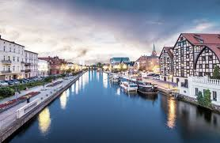
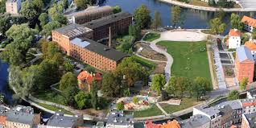
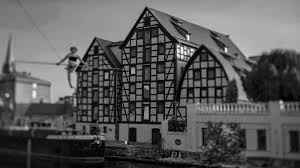
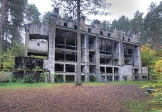
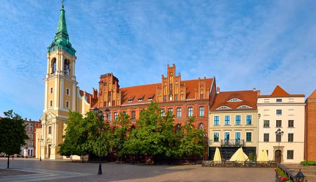
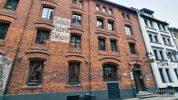

Kujawsko-Pomorskie
Najważniejsze miasta
Bydgoszcz
Bydgoszcz to miasto nad Brdą i Wisłą, znane z malowniczej Wyspy Młyńskiej i Opery Nova. Słynie również z pięknej secesyjnej architektury oraz rozwoju jako ważny ośrodek przemysłowy i akademicki. Wyspa Młyńska
Zielona oaza w centrum miasta, otoczona zabytkowymi młynami i kanałami Brdy. To idealne miejsce na spacer, piknik lub zwiedzanie okolicznych muzeów.
Spichrze nad Brdą
Charakterystyczne budowle, będące symbolem Bydgoszczy, dawniej służące do przechowywania zboża. Obecnie mieszczą się tu muzea i galerie sztuki.
Exploseum
Podziemny kompleks fabryki z czasów II wojny światowej, w którym produkowano materiały wybuchowe. Dziś to muzeum historii techniki i wojskowości, oferujące fascynujące zwiedzanie tuneli i hal produkcyjnych.
Toruń
Toruń to miasto Mikołaja Kopernika, znane z gotyckiej starówki wpisanej na listę UNESCO. Słynie z pierników oraz charakterystycznych spichlerzy i krzywej wieży, które przyciągają turystów z całego świata.
Stare Miasto
Jeden z najlepiej zachowanych średniowiecznych zespołów miejskich w Polsce, wpisany na listę UNESCO. Warto zobaczyć Ratusz Staromiejski, gotyckie kościoły i urokliwe kamienice.
Dom Kopernika
Miejsce urodzenia słynnego astronoma Mikołaja Kopernika, obecnie muzeum poświęcone jego życiu i odkryciom. Wystawy interaktywne pozwalają lepiej zrozumieć jego teorię heliocentryczną.
Żywe Muzeum Piernika
Interaktywne muzeum, w którym można własnoręcznie upiec tradycyjne toruńskie pierniki. To atrakcja zarówno dla dorosłych, jak i dzieci.